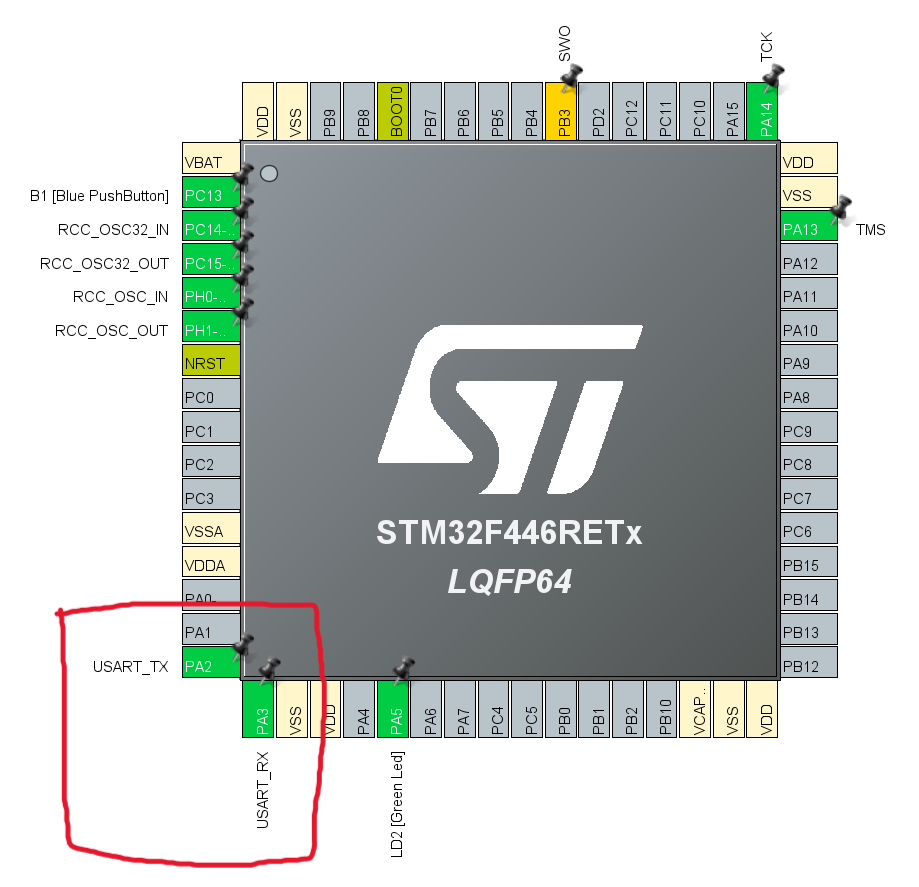

STM32資料 基礎編 2
シリアル通信でデータを送ってみよう
STMからPCにデータを送信する方法を学んでみよう
今回は1本の線のみを使って、0と1のデータを順番に送るシリアル通信を紹介する
今回やること
前回と同じ流れなので、資料に沿って進めてね
作業の流れ
- ピンを割り当てる
- wrapper.cppにコードを書き込む
- STM32にプログラムを書き込み実行する
- TeraTermでデータを受信する
ピンの割り当て
今回は、USARTという機能を使って通信を行う
画像のようにPA2とPA3にUSART_RX（受信）とUSART_TX（送信）を割り当ててみよう
(すでに割り当てられている場合は確認して次に進もう)
プログラム
データを送信する関数
ここでは指定したデータを送信する関数を紹介する
関数
HAL_UART_Transmit(&huartx, Data, Len, Time);この関数の引数
1つ目のUART_HandleTypeDef*はHALライブラリで定義されているので
難しいことを考えないで使ってね
| 引数名 | 変数型 | 内容 |
|---|---|---|
| &huartx | UART_HandleTypeDef* | UARTのポインタ（xはUARTの番号） |
| Data | uint8_t* | 送信するデータのポインタ |
| Len | uint16_t | 送信するデータ長 |
| Time | uint32_t | 最大実行時間（超えたら処理を諦める） |
受信のお話(次回の導入?)
- データを受信する関数
HAL_UART_Receive(&huartx, Data, Len, Time);受信したデータを入れる変数をdataに入れる 他の引数は送信と同じなので覚えておこう！
この関数が実行されている時に来たデータしか受信できないので、プログラムによっては取りこぼしてしまうことがある
受信のお話は次の資料で詳しく解説します!
サンプルコード
起動時に1度だけ"Hello World"と送信し、その後数字をカウントアップするコードを載せた
#include "wrapper.hpp"
#include "usart.h"
#include "string"
uint16_t count = 0;
void init(){
uint8_t str[] = "Hello World\n";
HAL_UART_Transmit(&huart2, str,12,100);//strの中身を送信
}
void loop(){
//文字と数字を組み合わせたものを文字列に変換
std::string str = "count:" + std::to_string(count) + "\n";
HAL_UART_Transmit(&huart2, (uint8_t *)str.c_str(),str.length(),100);
//カウントアップ
count ++;
HAL_Delay(500);
} 細かいお話
- 文章を送信する仕組みについて
ここでは、文章を送信する仕組みとコードの詳しい説明をする
文章の送信の際には、文字を数字に変換してから送信している
ここでは、数字とアルファベットと記号に0~127の数字を割り振ったASCIIコードと呼ばれるものを利用している
0~127の数字は2進数7桁で表現できるため、uint8_t（符号なし整数8桁）の配列に数字の並びとして格納している
uint8_t str[] = "Hello World"; std::string str = "count:" + std::to_string(count++) + "\n";この部分で文字を数字に変換している
TeraTermでの受信
TeraTermを使うことで、STMから送信したデータを受信することができる
下の手順を参考に実際にデータを見てみよう！
受信方法
- STM32とPCをUSBケーブルで接続する
- TeraTermを起動して、新しい接続を開く（ファイル > 新しい接続で開けるよ）
- シリアル(E)を選択する
文字化けや改行がおかしいときは
- 文字化けしてしまったとき
- 改行がおかしいときは
設定(S)からシリアルポート(E)を選択し、スピードを115200にしよう
設定(S)から端末(T)を選択し、受信の改行コードをLFにしよう
終わりに
今回はシリアル通信について説明した
現在の値やエラーメッセージの出力など、様々な用途で使えるのでぜひ覚えておこう
次回は、通信の管理でとっても便利な割り込み処理について説明します